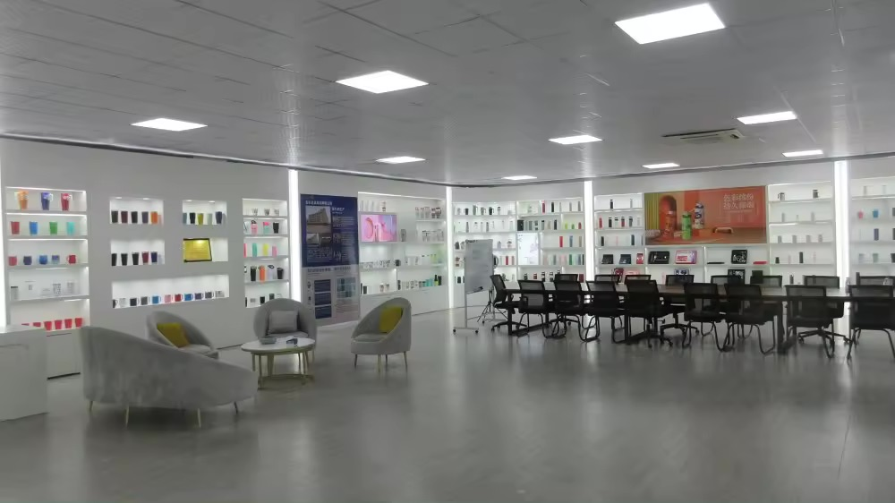
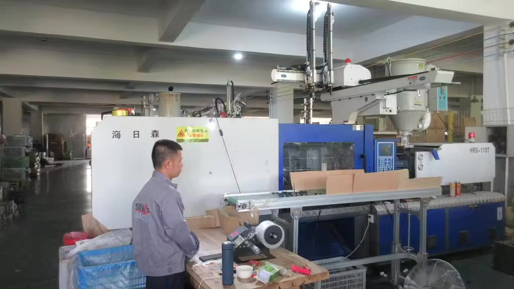
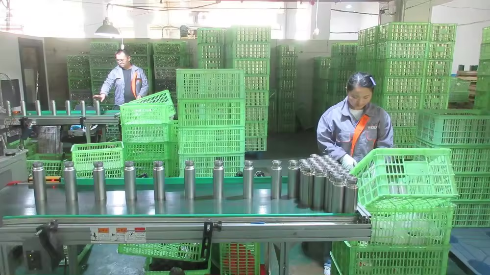

How Much Does a Custom Stainless Steel Bottle Mould Cost in 2026?
A practical costing reference for importers specifying custom drinkware — the tooling types you actually pay for, STWADD's 2026 schedule, market bands, lead times, and the ownership clause to put in your purchase order.

The question "how much is the mould?" is the moment a buyer stops browsing and starts committing capital. It is also the question most quotes answer with a single number that hides four different costs. A bottle is not one tool — it is a steel shell, sometimes a full steel assembly, a plastic lid or collar, and the surface finish on top. Below is how those costs actually break down, what STWADD quotes for each, what the wider market looks like, and the ownership clause you should put in the purchase order before anyone cuts steel.
01 The Tooling You Actually Pay For
A "bottle mould" quote usually bundles several separate tools. Knowing which one you are paying for changes both the price and what you own afterwards:
- Steel outer-shell mould — shapes the outside body. This is the entry tool if you are happy with a standard inner wall and just want a unique outside shape.
- Full stainless steel tooling — shell plus inner wall, base and lid ring as a matched set. Needed when the whole cup profile, including the vacuum chamber, is custom.
- Plastic component mould — the lid, cap, collar or straw. Even an "all-steel" bottle usually has a plastic lid, and that lid is a second tool.
- Surface setup — spray-coating one colour, or a silk-screen / printing setup per colour. These are not moulds; they are production setups that recur on every order.

02 STWADD Tooling Schedule (2026)
These are the figures we quote. They are our numbers, not a market average — use them as a concrete reference point when you compare other suppliers:
| Tooling item | STWADD setup (one-time) | Covers |
|---|---|---|
| Stainless steel outer-shell mould | USD 1,000 | Outside body shape of one model |
| Complete stainless steel tooling | USD 2,000 | Shell + inner wall + base + lid ring as a set |
| Plastic component mould (lid / cap / collar / straw) | USD 2,000 | One plastic part, single cavity family |
| Spray-coating setup, one colour | USD 30 | Per production run, per colour |
| Colour / printing setup (silk screen, per colour on plastic) | USD 50 | Per production run, per colour |
| New-tooling minimum order quantity | 3,000 pcs / SKU | Below this the tooling cannot be amortised |
03 How That Compares With the Wider Market
For context, quotes seen across Yongkang and the broader Zhejiang cluster in 2026 typically land in these bands. Treat them as a sanity check, not a promise — cavitation, steel grade and finish drive the real number:
| Tooling item | Typical market range (2026) | What moves the price |
|---|---|---|
| Steel outer-shell mould | USD 800 – 3,000 | Cavitation, drawing depth, necking complexity |
| Full stainless steel tooling | USD 1,500 – 5,000 | Whether the inner wall is also custom |
| Plastic component mould | USD 1,500 – 4,000 | Part size, sliders, number of cavities |
| Spray / print setup | USD 20 – 80 | Colour count, mask complexity |

04 Lead Time, From Drawing to Production
Tooling is not instant, and the calendar is where most first orders slip. The realistic sequence:
- Mould fabrication: about 3 to 5 weeks for steel tooling, depending on cavitation and finish.
- First custom samples: 7 to 10 days after the mould is cut and the surface is set up.
- Mass production: 25 to 30 days after you approve the sample.
Plan all three. A buyer who budgets only the "25–30 days production" and forgets the tooling and sampling windows is the buyer whose goods miss the trade-show or the season.

05 MOQ and When a New Mould Pays Back
A new mould only makes sense when the volume covers the tool. At a 3,000-piece new-tooling minimum, the maths is straightforward: the per-unit price has to recover the tooling spread across the run. The mould starts paying for itself on the second order, because re-orders drop the one-time tooling cost entirely. Two rules of thumb:
- If your annual volume is under roughly 5,000 pieces, a stock mould with your colour and print is almost always cheaper than a new tool.
- If your annual volume clears 10,000 pieces and the shape is your brand identity, the new mould pays back within two to three runs and you own a unique asset.
06 The Mould-Ownership Clause to Put in Your PO
Copy this and fill the brackets. The point is to state, in writing, who owns the tool and what happens to it:
Tooling: The buyer pays a one-time tooling fee of [amount] for [describe mould: shell / full steel / plastic lid]. The mould is the buyer's property. The supplier stores and maintains it free of charge while the buyer places orders, and shall not use it to produce goods for any third party without the buyer's prior written consent. On termination of the relationship, at the buyer's request the supplier shall return the mould to the buyer's nominated address or destroy it and certify destruction in writing. The tooling fee is not refunded but is not charged again on re-orders of the same item. [Optional: the tooling fee is waived once cumulative orders reach [quantity] pieces.]
Without this clause, "you paid for the mould" and "the mould is yours" are two different things, and the gap is where disputes start.
07 Talk to STWADD About Your Mould
Get a tailored tooling quote Free sample
Send us your drawing or a physical sample and we will return, in writing:
- the exact tooling items you need and the one-time cost for each;
- the per-unit price at your target quantity (3,000 / 5,000 / 10,000);
- the mould-fabrication and sampling lead time, and the production window after sample approval.
Sample policy: we send a sample free of charge — you pay only the freight, no deposit. The mould-ownership clause above is included in every custom order we quote.
WhatsApp +86 150 8822 8843 · Email bob@stwadd.com
We are a factory-backed supply company in Yongkang, Zhejiang: production runs to your specification at audited partner factories we qualify and work with directly, and tooling is cut and maintained under our own QC before the container is sealed. Our OEM and ODM page covers sampling, lead times and inspection, and the 2026 catalogue lists every in-stock model if a stock mould with your finish is the faster route.